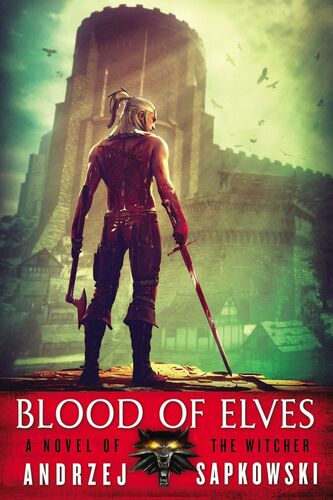
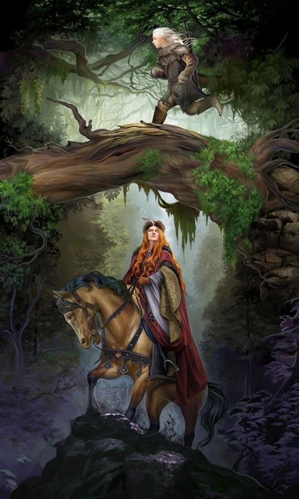

Blood of Elves is the first novel in the Witcher saga written by Author Andrzej Sapkowski. It is a sequel to the Witcher short story collections Sword of Destiny and The Last Wish, and is continued by The Time of Contempt. The UK edition was released on 16 October 2008 by Gollancz, and a 2nd edition was released the following year on 21 May 2009. The U.S. edition was released on 1 May 2009 by Orbit.
Buy Blood Of Elves Here
Blood Of Elves US Cover Published 01-May-2009
The Empire of Nilfgaard attacks the Kingdom of Cintra. Queen Calanthe commits suicide and her granddaughter, Cirilla, called Ciri and nicknamed the "Lion Cub of Cintra" manages to flee from the burning capital city. Emhyr var Emreis, Emperor of Nilfgaard, sends his spies to find her. He knows that this young girl has great importance, not only because of her royal blood, but also because of her magical potential and elven blood in her veins.
The girl is being protected by Geralt of Rivia, a witcher - a magically and genetically mutated monster slayer for hire, who takes her to the witchers' keep - Kaer Morhen. There, Ciri is being taught by the other witchers, including old Vesemir, Coën, Eskel and Lambert. She learns about monsters and how to fight them. She is taught to fight with a sword in the witcher style. But during her "education", the sorceress Triss Merigold comes to Kaer Morhen. She is called by Geralt to help with occasional strange and abnormal behavior he has seen in Ciri. Triss realises that Ciri is a Source. She acknowledges that she does not have the power to control Ciri's talent, and advises Geralt to swallow his pride and seek help with Yennefer, a more experienced sorceress and his former lover.
At the same time, a mysterious wizard called Rience is looking for the girl. He is a servant of a more powerful mage, who remains unknown. He captures Geralt's friend, Dandelion the bard, and tortures him for information about Ciri. Dandelion is saved by the timely arrival of Yennefer, who engages in a short magic combat with Rience. Rience manages to escape through a portal opened by his master, but left with a prominent facial scar from Yennefer's spell.
In the spring, Geralt leaves Kaer Morhen with Triss and Ciri, intending to deliver Ciri to the Temple School in Ellander where she would receive a "normal" education from Nenneke. On the way, Triss falls ill, and they join Yarpen Zigrin's dwarven company who is guarding a caravan for King Henselt. Geralt tells Ciri about the roses of Aelirenn, an elf who died leading the elven youths to fight the humans. The caravan is attacked by the Scoia'tael, and it is revealed that the escort mission was a trap set by the kings who doubted Yarpen's loyalty.
Meanwhile, in Hagge Castle in the Pontar Valley, Vizimir II, Demavend, Henselt, Foltest, and Meve meet in secret to discuss the Nilfgaard army who are camped on the bank of the Yaruga river. It is concluded that Ciri must be found and killed "for matters of State" and none of the others in the room speak out against this; resolving to instead remain silent in agreement. A while later, Menno Coehoorn informs Emhyr of this secret meeting of kings in Hagge castle. Amongst other things, Emhyr tells the governor to inform the Chapter of this meeting and that orders are to be sent to Rience to have him quietly assassinate Geralt, hide, and wait for further instructions. However, he was explicitly not to harm Yennefer.
Later at Ellander, Ciri thinks she is dreaming, but sees Geralt and his party on their way to find Rience but wakes to hear Nenneke scolding Yennefer for the way she interacts with Ciri. Her stay is still haunted by disturbing dreams until the arrival of Yennefer, who starts educating her in the ways of magic. From an initial antagonism, their relationship develops into a strong and deep bond, like that of a mother and daughter. Meanwhile, Geralt does his best to track Rience and his mysterious employer. With the help of Dandelion and Shani, he forces a confrontation with Rience, during which both are injured. Rience's master intervenes again, opening a portal for him, and Geralt is prevented from pursuing the mage by Philippa Eilhart, who also kills the last surviving of the Michelet brothers so as not to provide Geralt any source of information which might eventually reveal the mysterious mage. Eilhart then leaves behind a wounded Geralt.
Yennefer became Ciri's mentor and teacher. As they are about to leave the Temple School in Ellander, Yennefer asks Ciri whether she didn't like her at first, leading to a series of flashbacks detailing Ciri's studies with Yennefer from the day they were introduced and back to the present as they are about to leave the Temple. And Ciri responds by admitting the she didn't like her at first, but it quickly changed, they both bonded together, afterwards they leave.
Triss Merigold And Ciri In Blood Of Elves